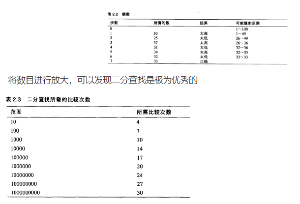
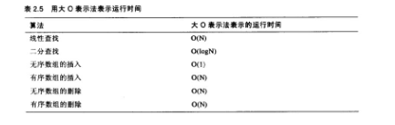

数组是应用最广泛的数据存储结构。它被植入到大部分编程语言中。大部分数据结构都有最基本的四个操作：插入、删除、查找、修改。对于这四种操作每一种数据结构都有相应的算法。算法和数据结构因此就是非常紧密的相联系的。
数组例子
数组的每一个元素必须是连续，也就是中间没有洞。就是说第一个元素和第三个元素有值，但不允许第二个元素是空的。
1 | public class Array { |
将程序划分成类
上面的程序包含了一个很大的方法，通过将程序划分成类以后，并且将其中的方法模块化，这样程序看起来更加有条理。
1 | package chapter2; |
有序数组
假设一个数组，其中的数据项按关键字升序排列，即最小值在下标为0的单元上，每一个单元都比前一个单元的值大。这种数组被称为有序数组。
当向这种数组中插入数据项时，需要为插入操作找到正确的位置：刚好在稍小值的后面，稍大值的前面。然后将所有比待茶数据项的值向后移以便腾出空间。
将数据按顺序排列的好处之一就是可以通过二分法查找显著地提高查找速度。但缺点是降低了插入操作的速度。
线性查找
默认情况下是线性查找，线性查找和未经排序的数组的查找操作相似。
二分查找
当使用二分查找时就体现有序数组的好处，这种查找比线性查找快很多，尤其是对大数组来说更为显著。
二分查找首先从要查找的范围确定一个中位数，然后比较要找的数和中位数的大小关系，确定更小的范围，依次递归，知道找到那个数。

有序数组的二分搜索代码
二分查找是将数组数据项范围不断对半分隔来查找特定的数据项。方法如下所示：
1 | package chapter2; |
有序数组的优点
使用有序数组最主要的好处是查找的速度比无序数组快多了。不好的方面是在插入操作中由于所有靠后的数据都需要移动以腾开空间，所以速度较慢。有序数组和无序数组中的删除操作都很慢，这是因为数据项必须向前移动来填补已删除数据项的洞。有序数组在查找频繁的情况下十分有用，但若是插入和删除较为频繁时，则无法高效工作。
大O表示法
计算机科学中评价算法效率的方法称为大O表示法。比较算法时候通常会说”算法A比算法B快2倍”，这种说法意义不大。因为数据项的变化会对排序造成一定很大影响。有可能数据项增加50%，算法A就比B快了3倍，或者可能只有一半的数据项，A和B的速度是相同的。
无序数组的插入：常数
无序数组的插入是我们到现在为止所见过的算法中唯一一个与数组项个数无关的算法。新数据项总被放在下一个有空的地方,a[nElems]，然后nElems增加。无论数组中的数据项个数N有多大，一次插入总是用相同的时间。我们可以说向一个无序数组中插入一个数据项的时间T是一个常数K
T=K
在现实情况中，插入所需的实际时间与以下这些因素有关：微处理器，编译程序生成程序代码的效率，等等。
线性查找：与N成正比
在数组数据项的线性查找中，我们已经发现寻找特定数据项所需的比较平均次数为数据项总数的一半。因此设N为数据项总数，搜索时间T与N的一半成正比：
T=K*N/2
同插入一样，若要得到方程中K的值，首先需要对某个N值的查找进行计时，然后用T来计算K。当得到K后，便可以对任意N的值来计算T。将2并入K可以得到更方便的公式，新K值等于原先的K除以2即
T=KN
这个方程说明平均线性查找时间与数组的大小成正比。即如果一个数组增大两倍，则所花费的查找时间也会相应地增长两倍。
二分查找:与log(N)成正比
同样，我们可以为二分查找指定出一个与T和N有关的公式:T=Klog2(N)
实际上，由于所有的对数和其他对数成比例(比如从底数2转换到底数为10需乘以3.322)，也可以将这个为常数的底数也并入K。由此不必指定底数:
T=Klog(N)
不要常数
大O表示法同上面的公式比较类似，但它省去了常数K。当比较算法时，并不在乎具体的微处理器或编译器；真正需要比较的是对应不同的N值，T是如何变化的，而不是具体的数字，因此不需要常数。
大O表示法使用大写字母O，可以认为其含义是order of(大约是)。我们可以使用大O表示法来描述线性查找使用了O(N)级时间，二分查找使用了O(logN)级时间。向一个无序数组中的插入使用了O(1)，或常数级时间。
下表总结的是讨论过的算法的运行时间

大O表示法的实质并不是对运行时间给出实际值，而是表达了运行时间是如何受数据项个数所影响的。除了实际安装后真正去测量一次算法的运行时间之外，这可能是对算法进行比较的最有意义的方法了。
为什么不用数组表示一切？
仅使用数组似乎就可以完成所有工作，为什么不用它们来进行所有数据存储呢？我们已经见到了许多关于数组的缺点。在一个无序数组中可以很快进行插入(O(1))，但是查找却要花费较慢的O(N)时间。在一个有序数组中可以查找得很快，用O(logN)的时间，但插入却花费了O(N)时间。对于这两种数组而言，由于平均半数的数据项为了填补”空洞”必须移动，所以删除操作平均需要O(N)时间。
如果有一种数据结构进行任何如插入、删除和查找的操作都很快(理想的O(1)或是O(logN)时间)，那就好了。后面我们会介绍类似的数组，但这是以程序的复杂度为代价的。
另外数组被创建后，占用内存长度是确定的，无法进行修改，这样的话，如果创建的长度过大，但是实际需要的很少就会造成内存浪费，如果创建的长度过小，就会造成溢出，无法弹性使用。